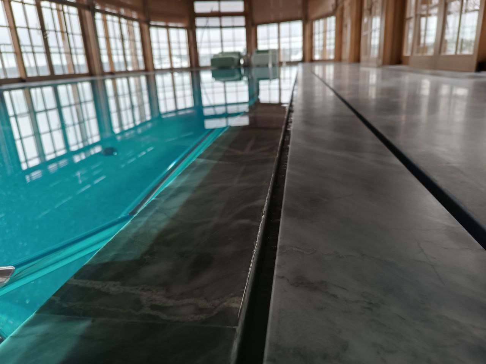

Введение
Заказать бассейн под ключ: что подготовить и проверить
Заказ под ключ начинается с согласования задачи и границ работ. Владельцу полезно понять, что он хочет получить, какие исходные данные нужны подрядчику и по каким документам сравнивать предложения.
До первой консультации определите назначение бассейна, желаемый сезон использования, примерное место на участке или в доме и список нужных функций. Точные размеры, оборудование и конструкцию подтверждают после изучения исходных условий.
Подрядчику потребуется информация об участке и доступных планах, а для бассейна в здании — данные о помещении и стадии проектирования дома. Неизвестные параметры следует обозначить как вопросы для обследования, а не заполнять догадками.
Что подготовить к первому разговору
Кратко опишите сценарий использования, желаемый тип чаши и отделки, наличие подогрева и автоматики. Отделите обязательные требования от пожеланий, которые можно рассматривать как опции.
Если есть план участка, дома или фотографии предполагаемой зоны строительства, приложите их и отметьте известные ограничения: подъезд, существующие коммуникации, перепады рельефа. Это предварительные материалы, не замена обследованию и проекту.
Заранее назовите удобный формат следующего шага: уточняющая консультация, подготовка задания на проектирование или обсуждение состава коммерческого предложения.
Что обсудить до подготовки предложения
Сравнивать предложения следует по одинаковой границе работ: что поставляют и монтируют, какие проектные и пусконаладочные работы включены, что оплачивается отдельно и какие данные пока приняты как допущение.
Вопросы о выборе конструкции собраны в статье как выбрать бассейн для дома. Здесь фокус — на подготовке запроса и проверке предложения подрядчика.
Если речь идёт о смете, сверяйте её строки с согласованным объёмом и спецификацией; подробный порядок проверки приведён в материале о смете на строительство бассейна.

Практика
Какие решения нужно согласовать до начала работ
До начала строительных работ стороны должны понимать границы проекта: тип и размеры чаши, способ водообмена, отделку, оборудование, состав монтажа и то, какие работы на участке остаются за владельцем.
Запишите принятые решения и открытые вопросы в задании, проекте или приложениях к предложению. Устные договорённости трудно сопоставить с фактической комплектацией и изменениями по ходу работ.
Смету сравнивайте построчно: одинаково ли учтены подготовка участка, конструкция, инженерия, отделка, пусконаладка и передача системы владельцу. Для позиций «по факту» уточните, от каких исходных данных зависит итог.
Отделите необходимые для выбранной системы работы от дополнительных функций — например, подсветки, аттракционов или расширенной автоматики. Так видно, какая опция меняет цену, сроки или проектные решения.
Попросите обозначить зависимости графика: какие решения должны быть утверждены до земляных и конструктивных работ, когда согласуют оборудование и как фиксируются изменения. Универсальный срок для разных бассейнов назвать нельзя.
Вопросы исполнения и этапности раскрывает отдельная статья о строительстве бассейна под ключ; здесь важна проверка договорённостей до старта.
Критерии выбора
Четыре пункта для сравнения предложений
Профильные задачи
Уточните, какие типы бассейнов и этапы работ подрядчик берёт на себя, а какие передаёт другим исполнителям. Это помогает понять границы ответственности, не полагаясь на одно название услуги.
Состав проектирования
Проверьте перечень результатов проектирования: какие чертежи, спецификации и исходные решения вы получите до начала работ и кто их согласует.
Комплектация и исключения
В коммерческом предложении должны быть различимы оборудование и материалы, монтаж, пусконаладка, включённые работы и исключения. Если модель или объём пока неизвестны, попросите зафиксировать это как незаполненную позицию.
Передача и дальнейший сервис
Уточните, какие инструкции и документы передают при завершении работ, кто проводит запуск и куда обращаться по вопросам обслуживания. Условия гарантии и сервиса сверяйте с договором и документами на конкретное оборудование.
Для сравнения общего бюджета можно перейти к статье о факторах стоимости бассейна; оценивать предложения нужно только при сопоставимом составе работ.
Проверка подрядчика
Сигналы, которые нужно прояснить до договора
Один настораживающий признак сам по себе не доказывает, что исполнитель ненадёжен. Попросите уточнить конкретные пробелы: в каком документе будет зафиксировано решение, кто отвечает за смежную работу и что произойдёт при изменении объёма.
- Называет финальную стоимость без проекта, размеров чаши, анализа грунта, выбора отделки и оборудования.
- Не фиксирует в договоре состав работ, этапы строительства, сроки, гарантию и зону ответственности.
- Предлагает начинать земляные работы до согласования закладных элементов и технического помещения.
- Уходит от обсуждения гидроизоляции, системы фильтрации, электрики и будущего обслуживания бассейна.
- Делает «скидку только сегодня», но не предоставляет подробную спецификацию и состав сметы.
- Не предупреждает о технологических паузах и обещает слишком короткие сроки строительства.
Если подрядчик не может объяснить состав предложения, предложите письменно перечислить включённые работы, исключения, исходные допущения и вопросы, которые требуют обследования или проектирования.
Выбирайте исполнителя после сравнения ответов и документов. Не принимайте цену, срок, гарантию или технический результат за подтверждённый, пока они не привязаны к конкретному объёму и условиям проекта.
Пошагово
Как пройти путь от запроса до согласованного объёма
Путь к договору удобнее вести по контрольным точкам: исходная задача, данные об участке, проектные решения, состав предложения и фиксация границ работ.
Заранее отметьте, что уже известно, а что пока является пожеланием или допущением. Подрядчику проще объяснить, какие вопросы влияют на решение и что следует проверить на объекте.
01. Описать задачу и сценарий использования
Опишите назначение бассейна, сезонность, предпочтительный тип чаши и желаемые функции. Если некоторые решения ещё не приняты, попросите показать, как они влияют на объём предложения.
- для отдыха всей семьи или активного плавания;
- сезонный уличный или круглогодичный вариант;
- наличие детей и требования к безопасности;
- использование рядом с баней или зоной отдыха;
- необходимость подогрева и защитного укрытия.
02. Подготовить доступные сведения об участке и доме
Передайте доступные планы, фотографии и сведения о коммуникациях; не считайте их заменой обследования. Неизвестные грунтовые или строительные условия должны оставаться вопросами для проверки.
- план участка или схему с размерами;
- фотографии зоны предполагаемой установки;
- информацию о рельефе и грунтах (если есть);
- расположение дома, террасы, коммуникаций;
- точки подключения воды, электричества и канализации.
03. Согласовать, какие данные ещё нужно получить
Уточните, какие консультации, обследования и проектные материалы входят в предложение, а какие выполняются отдельно. Так можно заранее понять, на каком основании подрядчик оценивает объём работ.
04. Сравнить состав коммерческих предложений
Сопоставьте одинаковые позиции: чашу, подготовку, гидроизоляцию и отделку, инженерное оборудование, монтаж, запуск и исключения. Низкая итоговая сумма без одинаковой комплектации не делает предложения сравнимыми.
- состав работ по этапам;
- оборудование и материалы с характеристиками;
- сроки выполнения;
- гарантии и условия обслуживания;
- исключения и дополнительные опции.
05. Закрепить объём и порядок изменений письменно
Попросите пометить неутверждённые модели, объёмы и условия как открытые позиции. Не превращайте предварительную оценку в гарантированную стоимость или календарный срок.
До подписания проверьте, где зафиксированы состав работ, границы ответственности, порядок согласования изменений, этапы и условия передачи результата.
Что происходит после согласования
После согласования объёма следующий шаг зависит от проекта: уточнение исходных данных, разработка документации или организация работ. Порядок выполнения стройки раскрыт в отдельной статье о строительстве бассейна под ключ.
Частые ошибки
Что перепроверить, чтобы не ошибиться при заказе
Типичная ошибка — оценивать предложение по короткому описанию и общей сумме, не сверяя состав работ и исключения. Сначала приведите варианты к одной границе проекта.
Не считайте устное обещание частью заказа, пока его не внесли в согласованные документы. Это относится к характеристикам оборудования, срокам, отделке, дополнительным работам и сервису.
- Сравнение только итоговой суммы без проверки состава работ, оборудования и материалов отделки.
- Отсутствие понимания, кто отвечает за стыки между чашей, инженерными системами и благоустройством участка.
- Игнорирование доступа к техническому помещению и будущему обслуживанию оборудования.
- Перенос вопросов водоподготовки, фильтрации и химии воды «на потом», уже после запуска бассейна.
- Отсутствие письменного графика работ, этапов и прозрачной структуры оплаты.
Не принимайте точную цену или дату завершения как подтверждённые, если ключевые исходные данные ещё не проверены. Попросите указать, какие условия могут изменить расчёт или график.
Не соглашайтесь на решение, техническую причину которого подрядчик не может объяснить. Зафиксируйте вопрос и получите уточнение до утверждения соответствующей позиции.
Маршрут к заявке
Что получить по итогам первичной консультации
Полезный результат первой встречи — согласованный следующий шаг и список того, что ещё нужно выяснить. Консультация сама по себе не заменяет проект и не подтверждает технические решения.
Перед встречей запишите вопросы и подготовьте доступные планы, фотографии зоны и пожелания. Если решение принимают несколько членов семьи, заранее соберите их обязательные требования.
Попросите отделить подтверждённые исходные данные от предположений. Для каждого неизвестного параметра уточните, кто и каким способом его проверит.
Список исходных данных и открытых вопросов
Уточните, какие сведения нужны, чтобы перейти от разговора к проектному заданию и сопоставимому предложению. Не требуйте точного расчёта там, где исходных данных пока нет.
Обсудите предполагаемую сезонность, тип чаши, отделку и функции, которые действительно нужны. Каждую опцию оценивайте вместе с её влиянием на систему и объём работ.
Для каждой функции выясните, какие дополнительные решения она требует и входит ли их разработка в текущий этап.
Уточните, как владелец получит сведения об эксплуатации и какие действия после запуска относятся к сервису. Не подразумевайте, что дальнейшее обслуживание автоматически входит в строительство.
Эксплуатация и необходимые функции
Попросите выдать перечень обсуждённых решений, неутверждённых вопросов и материалов, необходимых от заказчика.
Проверьте, какие документы будут основанием для состава и стоимости работ и на каком этапе их согласуют.
Документы и состав предложения
Попросите выделить включённые работы, опции и исключения в предложении, а не объединять их в нерасшифрованный пакет.
Уточните, как подрядчик фиксирует изменения по ходу проекта и кто их утверждает со стороны заказчика.
Ответственность и безопасность работ
Убедитесь, что способ доступа к участку, зона работ и взаимодействие с другими исполнителями обозначены как вопросы проекта, если они ещё не согласованы.
Итог встречи — понятный список решений и следующий шаг, а не обещание результата без проекта.
Заявка
Как сравнить коммерческие предложения перед договором
Запрос становится предметным, когда подрядчики получают сопоставимые вводные. Передайте одинаковое описание задачи и попросите указать принятые допущения.
В заявке укажите назначение, предполагаемое место, желаемые функции и доступные планы. Не указывайте придуманные параметры грунта или проекта как проверенные факты.
Проверьте, какие работы и материалы перечислены отдельно, какие объединены в пакет и какие исключены. Если состава недостаточно для расчёта, попросите назвать недостающие данные.
Состав заявки
Разделите три вопроса: что стоит строительство по предложенному объёму, какие эксплуатационные решения предусмотрены и что потребуется обслуживать. Не объединяйте эти сравнения в одно обещание «экономии».
Сопоставляйте предложения по одной комплектации, спецификациям и границам работ. Разница в итоговой сумме может объясняться разными объёмами, а не эффективностью исполнителя.
Сравните состав, цену и эксплуатацию отдельно
Уточните, кто отвечает за сопряжение проектирования, строительной части, оборудования, отделки и запуска. Распределение определяется конкретным договором, а не самим выражением «под ключ».
- Первый уровень: стоимость строительства и сроки реализации.
- Второй уровень: удобство эксплуатации в первый сезон — фильтрация, химия воды, укрытие, обслуживание.
- Третий уровень: состояние бассейна через несколько лет — ремонтопригодность, модернизация, замена оборудования.
Если часть работ выполняют другие специалисты, попросите обозначить точки передачи исходных данных и порядок согласования смежных решений.
Проверьте границы ответственности на стыках работ
Попросите перечислить материалы и сведения, на которых основана оценка; если они предварительны, это должно быть понятно из документа.
При сравнении стоимости проверьте, совпадают ли включённые этапы и исключения. Статья о факторах стоимости бассейна объясняет, почему две разные комплектации нельзя сравнивать только по сумме.
Какие вопросы оставить открытыми
Если предложение опирается на предположения, уточните, какой этап нужен, чтобы проверить их и перейти к следующему уровню проработки.
Перед подписанием проверьте, что итоговый объём и порядок действий отражены в проектных материалах и договорных приложениях. Открытые позиции должны оставаться обозначенными до получения нужных исходных данных.
Итоговая проверка
Финальная проверка перед согласованием объёма
Перед выбором убедитесь, что предложение отвечает на три вопроса: какой результат заказывается, какие работы входят и какие исходные допущения ещё не подтверждены.
Сверьте назначение, базовые параметры чаши, способ отделки, состав оборудования, монтаж и передачу системы. Проверьте, что исключения и отдельные позиции видны, а не скрыты в общей формулировке.
Что должно быть однозначно записано
- Какие задачи решает проект: отдых, плавание, баня, спорт, сезонное или круглогодичное использование.
- Полный состав работ, включённых в договор: строительство чаши, инженерия, отделка, благоустройство, пусконаладка.
- Используемые материалы и оборудование: фильтрация, подогрев, гидроизоляция, автоматика.
- Реальные технологические сроки и этапность выполнения работ.
- Структура оплаты: какие платежи привязаны к каким этапам строительства.
- Кто несёт ответственность за сервис, настройку и сопровождение после запуска.
До начала работ согласуйте, кто может запрашивать изменения, как рассчитывается их влияние на стоимость и график и где фиксируется утверждённый вариант.
Как согласуются изменения
Финальное сравнение возможно, когда у предложений совпадают исходные данные и границы объёма. Если этого нет, попросите сначала устранить расхождения или явно отметить их.
Смета должна соответствовать этому объёму; подробнее о её проверке — в материале как читать смету на строительство бассейна.
Когда можно сравнивать итоговые предложения
Если стоимость представлена только предварительно, сохраняйте эту оговорку при сравнении и не воспринимайте её как подтверждённую смету.
Перед подписанием сопоставьте договор, спецификацию и коммерческое предложение; при сомнениях в юридических последствиях условий обратитесь за профильной консультацией.
FAQ
Частые вопросы о бассейне под ключ
Как заказать бассейн под ключ?
Чтобы заказать бассейн под ключ, важно начать не с цены, а с понимания задачи. Подготовьте исходные данные: размеры участка, примерные габариты бассейна, назначение (семейный отдых, спорт, баня, сезонное или круглогодичное использование).
Далее подрядчик должен предложить консультацию, проектное решение, смету с составом работ, график реализации, договор и гарантийные условия. Только такой подход позволяет избежать скрытых расходов и переделок.
Как выбрать подрядчика для бассейна под ключ?
Надёжного подрядчика отличает специализация именно на бассейнах, а не «универсальное строительство». Важно, чтобы компания работала через проект, а не только через расчёт «по телефону».
Обратите внимание на прозрачность сметы, реальные примеры выполненных объектов, наличие сервиса после запуска и готовность нести ответственность за весь цикл: от котлована до ввода в эксплуатацию.
Какие признаки ненадёжного подрядчика?
Основные признаки риска — это попытка назвать точную цену без проекта и анализа участка, отсутствие детального договора, размытая комплектация и давление через «срочные скидки».
Также настораживает, если подрядчик не показывает инженерные узлы, не обсуждает гидроизоляцию, фильтрацию, обслуживание и уклоняется от технических деталей. В бассейне именно скрытые работы определяют срок службы и стоимость эксплуатации.
Что спросить на первой консультации?
Первая консультация — ключевой этап выбора подрядчика. Задайте конкретные вопросы:
- Какие этапы включает строительство бассейна под ключ?
- Какие реальные сроки реализации проекта?
- Как выполняется гидроизоляция и защита чаши?
- Какое оборудование используется и почему?
- Какие условия гарантии и сервисного обслуживания?
- Как устроено техническое помещение?
- Что входит в смету, а что является исключением?
Чем подробнее подрядчик отвечает на эти вопросы, тем выше вероятность, что проект будет выполнен без скрытых рисков и неожиданных затрат.
Расчет
Получить расчет стоимости
Подготовим ориентир бюджета, состав работ и инженерные решения под ваш участок, дом и желаемый формат эксплуатации.